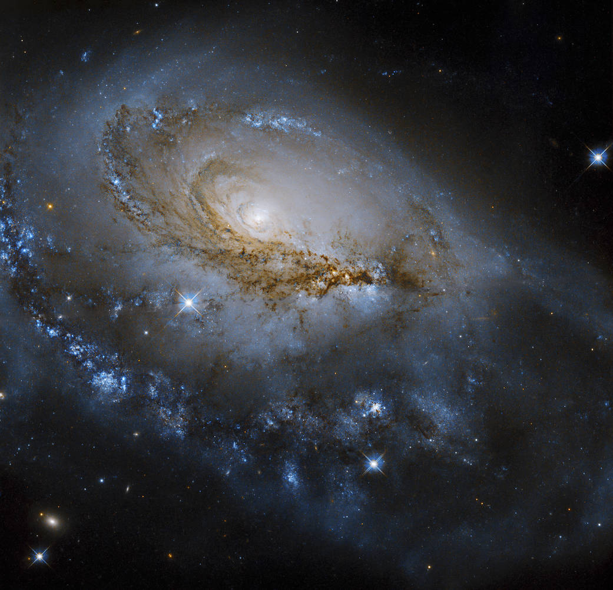
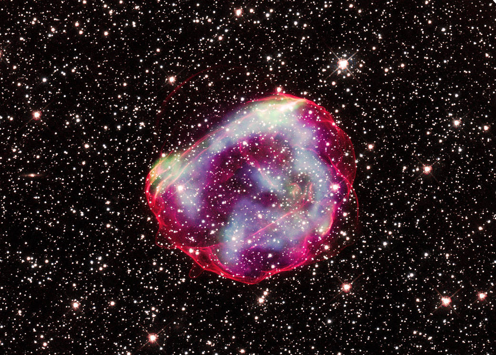

Image of the Day |
|
NASA Image of the Day is a web page made by NASA to show exciting or appealing images about the universe and planets. |
The Frozen Wild Dnieper RiverDescription:Curling snow drifts are magnified by the terrain around the 1,400 mile Dnieper River, flowing from Russia to the Black Sea. Image Source:https://www.nasa.gov/image-feature/the-frozen-wild-dnieper-river Taken Time:Apr 18, 2019 Editor:Nasreen Alkhateeb |
|
|  |
Spectacular SpiralDescription:The galaxy NGC 1961 unfurls its gorgeous spiral arms in this newly released image from NASA’s Hubble Space Telescope. Image Source:https://www.nasa.gov/image-feature/goddard/2022/hubble-studies-a-spectacular-spiral Taken Time:Sep 16, 2022 Editor:Andrea Gianopoulos |
|  |
Stellar ExplosionDescription:While astronomers have seen the debris from scores of exploded stars in the Milky Way and nearby galaxies, it is often difficult to determine the timeline of the star’s demise. Image Source:https://www.nasa.gov/mission_pages/chandra/images/setting-the-clock-on-a-stellar-explosion.html Taken Time:Sep 20, 2022 Editor:Lee Mohon |